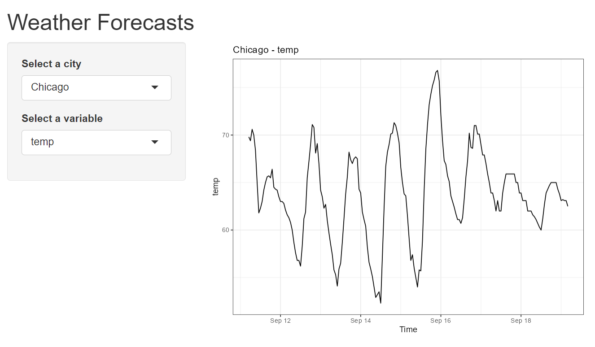

extension topic
2026-11-24
– Please clone your r-shiny-demo project. We will work in this today!
– The Statistics Experience is LIVE!
– Your GitHub project is LIVE!
– No Lab (11-24)
– I posted the tickets data set to Moodle.
– If you didn’t do course evaluations, please do so!
– Final Exam (12-3)
– install.packages("shiny") <- you will need this for today’s activity
– Make sure to have your group-number somewhere next to your names
– One submission per group; group submission enabled
– Select all pages for all “questions”
– Submit PDF on Gradescope (this has now been created for you)
Shiny apps let users interact with your data and your analysis!
This gallery is a very useful resource to be inspired by and to learn from!
We won’t be experts on Shiny after a couple of slides. I’m giving you the “basics” to think about, and then we will practice in our in-class activity!
User interface (UI) - what does the user see?
The server - what happens behind the scenes?
| Function | Purpose |
|---|---|
fluidPage() |
Creates the overall page |
titlePanel() |
Adds a title |
sidebarLayout() |
Creates a sidebar and main panel |
sidebarPanel() |
Holds user inputs |
mainPanel() |
Holds outputs |
selectInput() |
Creates a dropdown |
plotOutput() |
Creates a location for a plot |
selectInput(
"city",
"Select a city",
choices = c("Chicago", "Durham", "Sedona")
)In Shiny, a widget is an interactive user-interface element that allows someone to provide input or interact with an app.
| Widget | Shiny function |
|---|---|
| Dropdown menu | selectInput() |
| Slider | sliderInput() |
| Checkbox | checkboxInput() |
| Radio buttons | radioButtons() |
| Text box | textInput() |
| Action button | actionButton() |
I would emphasize that the UI and server have to communicate through matching IDs.
| UI | Server |
|---|---|
selectInput("city", ...) |
input$city |
reactive() is defined inside the server function.
What is your definition of reactive?
reactive() is defined inside the server function.
reactive() creates a value that automatically recalculates when the inputs it depends on change.
weather_city <- reactive({
weather |>
filter(city == input$city)
})library(shiny)
shinyApp(
# User interface
ui = fluidPage(
),
# Server logic
server = function(input, output, session) {
}
)– Read in these data in a .R file
– Explore these data
– Come up with some interesting ideas on how to explore these data through an interactive platform; What could be useful for a general audience?

What do we need to consider?
– weather for selected city
– weather variables that are numeric
– update the variable dropdown
– make plot
Typically can host a couple for free, and have to pay for more.